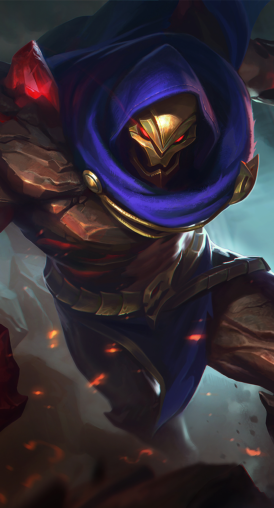
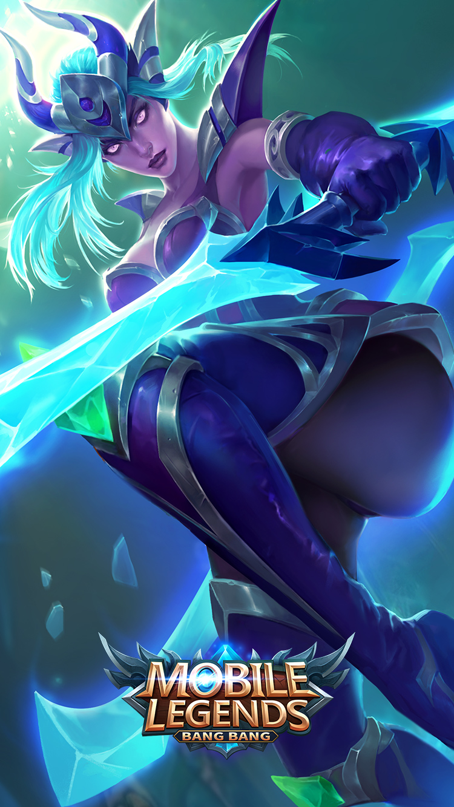

Dyrroth
Detail

Aldous
Detail
Balmond
Detail


Dalam kisahnya, pangeran kegelapan yang lahir bersamaan dengan waktu kematian pangeran Moniyan Empire ini memiliki kemampuan yang sangat lengkap, karena telah dilatih oleh Alice dan telah mempelajari kemampuan bertempur dari Thamuz.
Pangeran ini telah menjadi tangan kanan Alice, dan akan mewakili Lord of the Abyss untuk berperang melawan Moniyan Empire, menjalankan Dawn Plan dan menghancurkan Shinning Spark.
Sedangkan dalam pertandingan nyata, Dyrroth sendiri merupakan hero Mobile Legends dengan role Fighter, yang secara khusus memiliki kemampuan spesial Charge/Burst Damage.
Hero ini memiliki statistik yang cukup menarik. Yang mana dalam hal ini, meski memiliki tingkat kesulitan yang tinggi, Dyrroth memiliki daya serang yang besar dan ability effect yang bagus.
Hero Dyrroth ini pun memiliki set skill yang cukup berguna dalam pertandingan, karena hero ini memiliki beberapa skill yang bisa memperlambat gerakan lawan di samping memiliki charge/burst damage yang menakutkan.
Secara lebih rinci, hero ini memiliki satu skill pasif dan tiga skill aktif, termasuk di antaranya adalah Wrath of the Abyss, Burst Strike, Spectre Step, dan The Destruction.
Wrath of the Abyss (Skill Pasif) :
Kemampuan utama dari skill pasif Dyrroth Mobile Legends ini adalah dapat meningkatkan kemampuan skill 1 dan skill 2, ketika Rage-nya telah melebihi 50%.
Selain itu, skill ini akan memberikan damage fisik tambahan sebesar 140% dari total Physical ATK saat berhasil meluncurkan dua Basic Attack. Skill ini juga akan meregenerasi HP sebesar damage yang diberikan.
Sayangnya, meskipun bisa menambah kemampuan skill 1 dan skill 2, Wrath of the Abyss akan mengurangi Cooldown (CD) selama 1s pada kedua skill tersebut ketika efeknya mengenai setiap hero lawan.
Burst Strike (Skill Aktif 1) :
Skill pertama Dyrroth Mobile Legends ini merupakan skill yang bisa digunakan untuk menyerang lebih dari satu lawan yang berada di area yang sama, dan memberikan damage serta efek slow.
Ketika Dyrroth mengeluarkan skill ini, hero lawan akan memperoleh Physical Damage sebesar 200 (+60% Total Physical ATK), serta efek slow sebesar 30% selama 1.5s.
Dan jika Burst Damage memiliki jarak yang lebih jauh, maka efeknya pun akan bertambah. Dalam hal ini, damage-nya akan menjadi 140% dari damage asli dan efek slow akan menjadi berlipat ganda.
Spectre Step (Skill Aktif 2) :
Di skill keduanya, Dyrroth memiliki skill Blink, yakni sebuah skill yang bisa digunakan untuk berpindah tempat dengan cepat, sembari menyerang hero lawan yang berada di jalurnya.
Ketika menggunakan skill Spectre Step, Dyrroth akan berlari ke arah tertentu dan akan berhenti ketika menabrak hero lawan. Tabrakan ini akan memberikan damage fisik sebesar 230 (+60% Ekstra Physical ATK).
Dan ketika Dyrroth menggunakan skill ini kembali, hero ini akan mengunci target dan melakukan fatal strike, yang akan memberikan damage sebesar 345 (+120% Ekstra Physical ATK) dan mengurangi Physical Defence target sebesar 50% selama 4s.
The Destruction (Skill Ultimate) :
Untuk skill ultimate-nya, Dyrroth memiliki skill charge/burst damage sesuai dengan kemampuan spesialnya. Dengan skill ini, Dyrroth akan memberikan Fatal Strike dengan damage 650 (+250% Ekstra Physical ATK) serta efek slow sebesar 80% selama 1s.
Dengan berbagai macam kemampuan spesial ini, Dyrroth – Prince of the Abyss dibanderol dengan harga 32.000 BP seperti kebanyakan hero baru Mobile Legends lainnya.